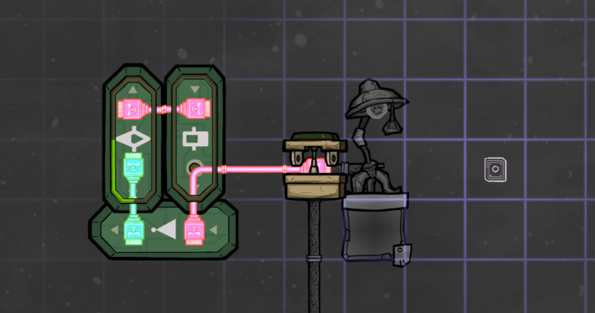
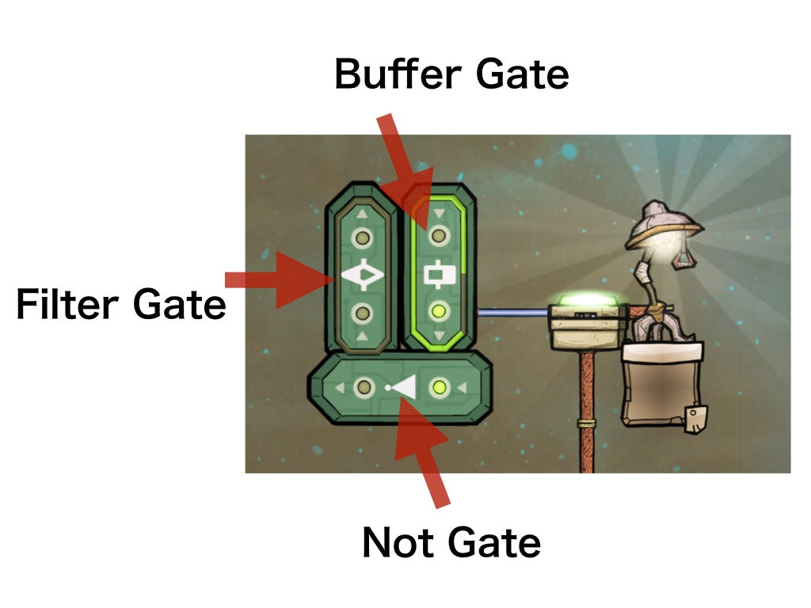
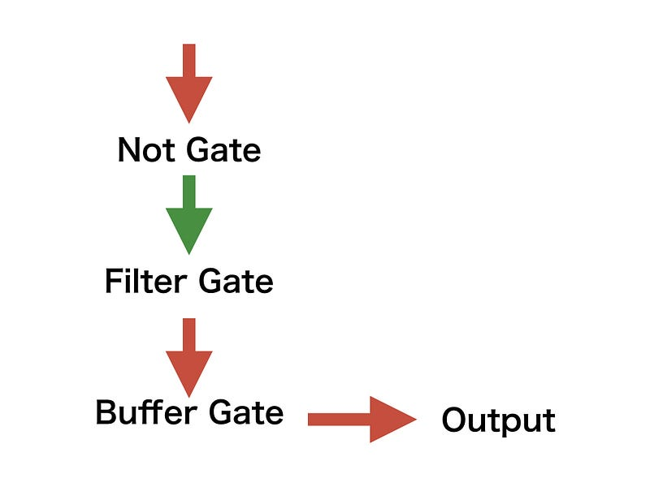
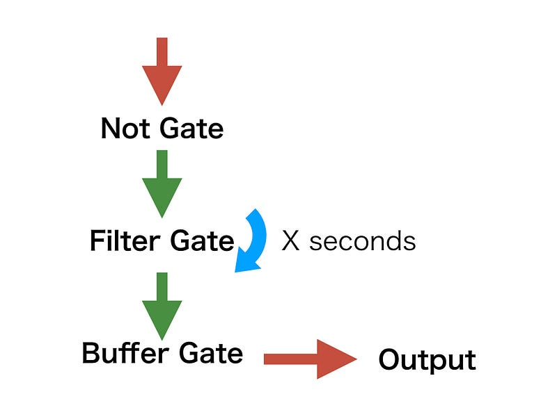
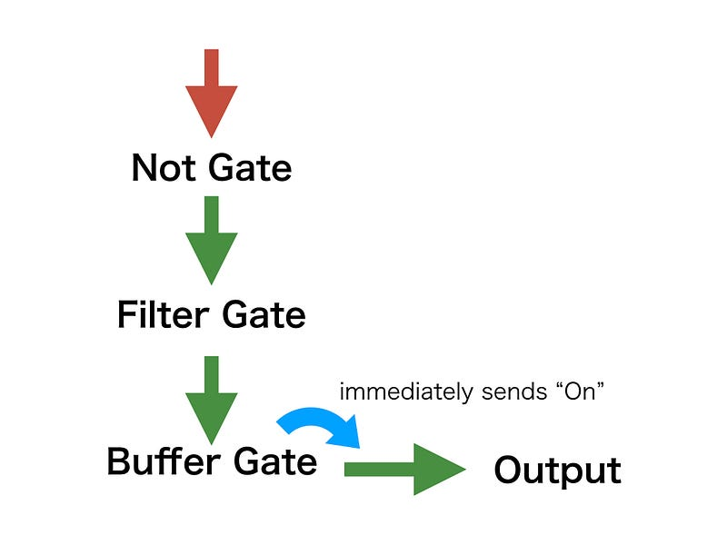
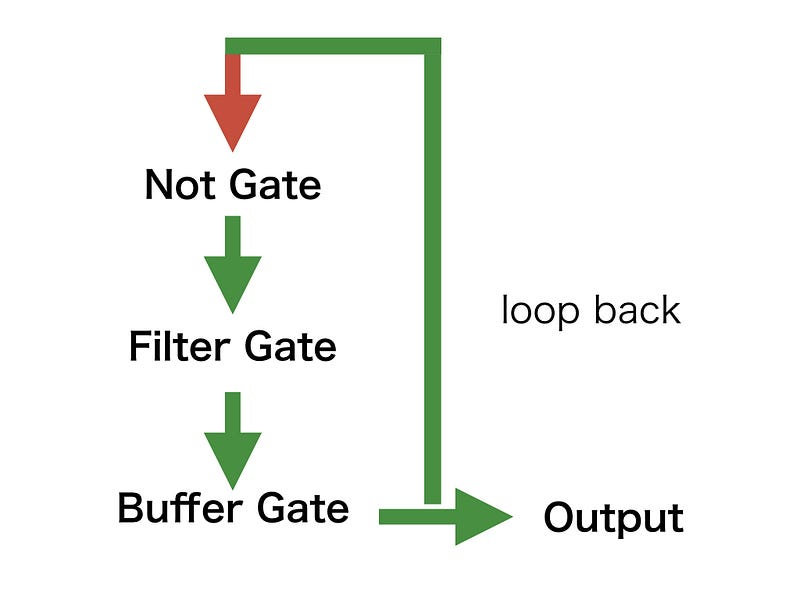
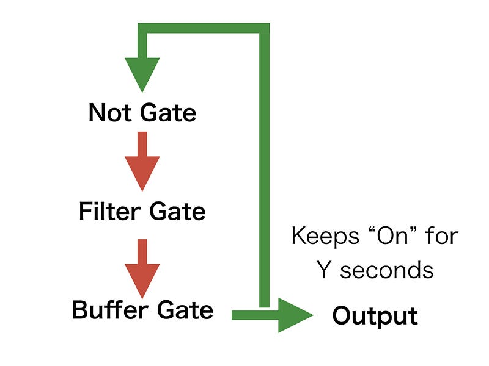
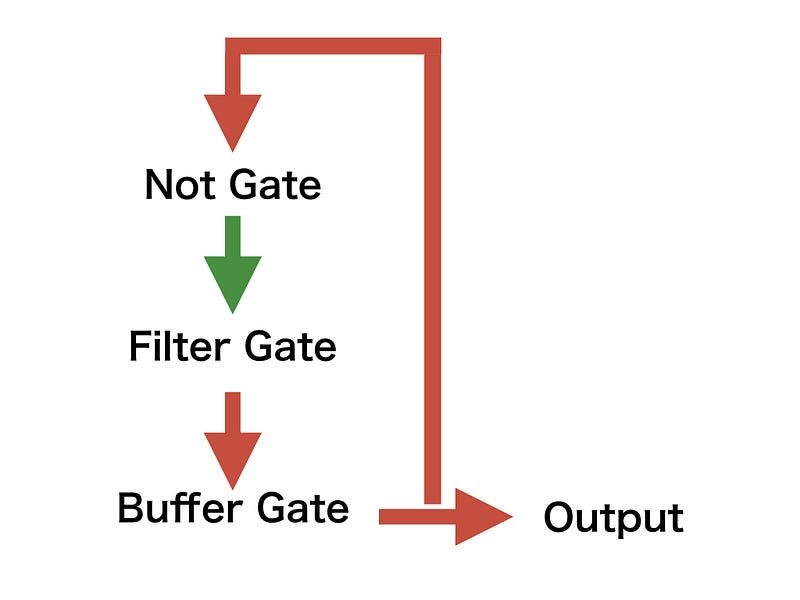
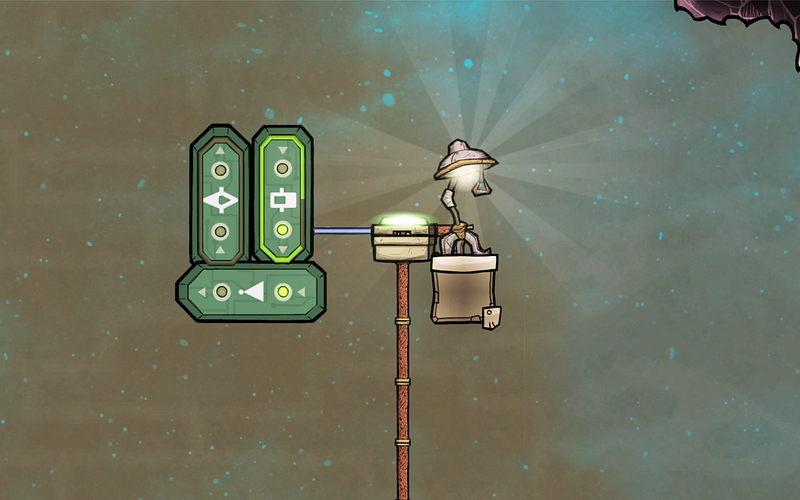
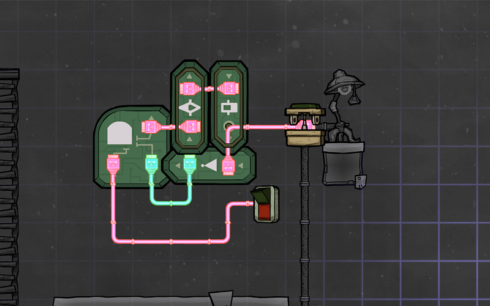

Generating Flip-flop Signals With Automation Tools
Generating Signals To Toggle On/Off At Intervals With Automation Tools
I always forget how to generate signals that flip-flop (on/off) at certain intervals with automation in Oxygen Not Included. This is my memo.

From this setup you can keep receiving "Off" signal for a user specified duration of X seconds, followed by the "On" signal for duration Y, and the cycle repeats forever.
It’s rather uninteresting for me to just show you the schematics and be done with it, so let’s go over how it works.
The gates that we will be using are Filter, Buffer, and Not.

It’s easier to think of this as starting from the Not gate.
We start out with Off signal to the Not gate. This will be immediately negated, and you will get an On state as the output.

This On signal feeds into a Filter gate, which holds sending the On signal for X amount of time. After this time passes, the output changes from Off to On.

This activates the Buffer gate, which immediately starts sending an On signal and keeps it that way for Y amount of time.

The output is sent back to the Not gate. The Not gate becomes inactive and sends the Off signal.

The Filter gate becomes inactive, and sends an Off signal.
This is fed into the Buffer gate again. Assuming that duration Y has not passed since the Buffer gate became active, the Buffer gate ignores the incoming Off signal and keeps itself active until the specified duration has passed.

And then the process starts over again with the Not gate receiving the Off signal.

The consumer should take the output from the Buffer gate’s output.
And voila, we now have a blinking light.

One last thing, If you want to turn this entire logic off using a manual switch, you need to prepend the input to the Filter gate with an And gate.
One of the inputs to the And gate should come from the Not gate, and the other should be from your choice of input.

If you use this logic, you only get the flip-flop effect when your other input into the And gate is active